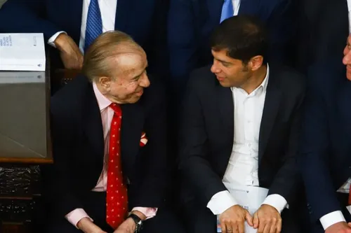
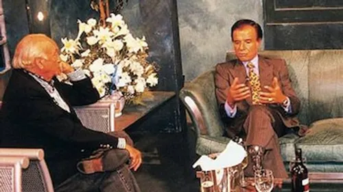

Carlos Saúl Menem inició su carrera política en el movimiento Partido Justicialista (peronismo) mientras estudiaba Derecho en la Universidad Nacional de Córdoba. Su estilo carismático y su cercanía con la gente lo convirtieron rápidamente en una figura destacada dentro de la política riojana.

En 1973 fue elegido gobernador de La Rioja por primera vez. Durante su gestión impulsó obras públicas, promovió el desarrollo provincial y fortaleció su imagen como líder popular.
Tras el golpe de Estado de 1976, fue detenido por la dictadura militar y permaneció varios años privado de su libertad.
Con el regreso de la democracia, volvió a presentarse y fue nuevamente elegido gobernador en 1983 y reelecto en 1987, consolidando su liderazgo tanto en la provincia como dentro del peronismo nacional.

Luego de sus mandatos fue elegido senador nacional por La Rioja en 2005 y ocupó ese cargo durante varios años.